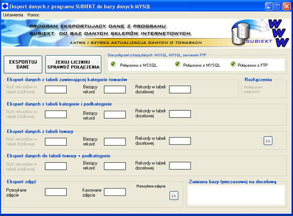

SYSTEM SERWISU INTERNETOWEGO PLUS SKLEP INTERNETOWY ZINTEGROWANY Z PROGRAMEM MAGAZYNOWYM
INSERT SUBIEKT
System serwisu internetowego jest zintegrowany z programem do eksportu danych z programu magazynowego do
bazy danych serwisu internetowego. W takim przypadku nie ma potrzeby "rêcznej" aktualizacji bazy danych -
informacje o towarach s± przez jedno klikniêcie myszy przenoszone do bazy danych serwisu internetowego.
W programie magazynowym towary przyporz±dkowane s± do GRUP (KATEGORII). Dodatkowo ka¿demu towarowi mo¿e
byæ przyporz±dkowana okre¶lona cecha. W wyniku eksportowania danych w serwisie internetowym tworzone
s± KATEGORIE oraz PODKATEGORIE z poszczególnymi towarami zgodnie z tym co zosta³o wprowadzone w programie
magazynowym.
Eksportowane s± wszystkie dane o towarach jakie znajduj± siê w programie
magazynowym INSERT SUBIEKT:
nazwa towaru,
cena netto towaru (wszystkie poziomy cenowe)
cena brutto towaru (wszystkie poziomy cenowe)
kategoria towaru,
podkategoria towaru (podkategorie s± automatycznie tworzone z cech towarów)
opisy towaru,
stany magazynowe,
zdjêcia towaru (dla Subiekta GT),
Inne dane o towarze jakie znajduj± siê w programie SUBIEKT (³±cznie z polami definiowanymi przez u¿ytkownika).
Zamówienia z³o¿one w serwisie internetowym mog± byæ importowane do
programu magazynowego INSERT SUBIEKT - klienci s± dodawani jako kontrahenci, z zamówien tworzone
s± dokumenty o nazwie "zamówienie od klienta - ZK" na ich podstawie mo¿na wystawiaæ dowolne dokumenty dostêpne
w programie SUBIEKT - w tym faktury VAT.
Opis aplikacji wymieniaj±cej dane miêdzy serwisem internetowym a programem magazynowym INSERT SUBIEKT
to ³atwy w instalcji i obs³udze program do tworzenia sklepu internetowego i oferty towarowej w Internecie.
Przeniesienie ca³ej bazy towarowej zawartej w programie magazynowym SUBIEKT odbywa siê w sposób automatyczny,
bez ingerencji u¿ytkownika. Dziêki temu nie ma potrzeby rêcznej edycji bazy towarowej serwisu WWW, dane o
towarach widoczne na firmowej stronie WWW (firmowym sklepie internetowym) s± zawsze aktualne i pozbawione b³êdów
Widok aplikacji Windows s³u¿±cej do eksportu danych o towarach z programu SUBIEKT do bazy danych
serwisu internetowego.

Z dowolnego miejsca: w biurze, firmie ³±cz±c siê Internetem, mo¿na aktualizowaæ internetow± ofertê towarow±
firmy poprzez uruchomienie opisywanego programu i wykonanie eksportu bazy danych towarów.
Program do eksportu danych o towarach z programu magazynowego insERT SUBIEKT do bazy danych serwisu WWW
wspó³pracuje z dedykowanym serwisem WWW serwis ten zawiera system pozwalaj±cy na umieszczanie dowolnych stron
statycznych, system do tworzenia i edycji zajawek (notek), g³ówn± czê¶ci± serwisu WWW jest sklep internetowy
zintegrowany z programem magazynowym SUBIEKT.
Opisywany system jest przydatny dla firm:
które chc± sprzedawaæ swoje towary w internecie
które potrzebuj± przedstawiæ swoj± ofertê towarow± w Internecie
które poprzez Internet chc± informowaæ swoich odbiorców o aktualnym asortymencie w magazynie
które chc± posiadaæ ³atwy w obs³udze, modyfikowalny serwis internetowy zarz±dzany poprzez system CMS
(dane do serwisu zajawki, notki, strony, zdjêcia itp. wprowadza siê do serwisu poprzez ³atwy w obs³udze
panel administracyjny obs³ugiwany poprzez strony WWW).
Jak funkcjonuje Program do eksportu danych o towarach z programu magazynowego insERT SUBIEKT do bazy danych serwisu WWW
Program odczytuje z programu magazynowego SUBIEKT informacje o grupach, cechach, produktach i ich cenach. Z cech towarów tworzone s± podkategorie - patrz: Tworzenie przez aplikacjê eksportuj±c± struktury typu KATEGORIA TOWARU - > PODKATEGORIA TOWARU na podstawie bazy towarowej programu SUBIEKT. Nastêpnie automatycznie tworzy i umieszcza w Internecie ofertê towarow±.
Tworzenie informacji odbywa siê z aktualnych, rzeczywistych danych jakie w danej chwili znajduj± siê w programie SUBIEKT.
System zapewnia obs³ugê czê¶ci handlowej i informacyjnej serwisu WWW przedsiêbiorstwa i pozwala na automatyczne:
- tworzenie detalicznej i/lub hurtowej oferty na stronach WWW
- tworzenie sklepu internetowego
- generowanie na stronach WWW cenników (katalogów ofertowych) do druku
Informacje:
Tu wpisaæ nazwê firmy
Imie i nazwisko osoby
Dane teleadresowe
Do czego s³u¿y oprogramowanie sklepu internetowego zintegrowane z programem do
eksportu danych z programów magazynowych (np. insERT SUBIEKT) ?
System slu¿y do automatycznej
aktualizacji danych o towarach znajduj±cych sie w bazie danych serwisu www danymi pobranymi z programu
magazynowego.
W takiej sytuacji nie ma potrzeby rêcznej edycji bazy towarów za pomoc± klasycznego
systemu zarz±dzania tre¶cia CMS.
Przyk³ad: firma ma w programie magazynowym kilkaset produktów,
ktore chce prezentowaæ w internecie na stronach sklepu internetowego. W przypadku zmiany cen i parametrów
towarów ka¿dy towar znajduj±cy sie w serwisie WWW nale¿y recznie edytowaæ. Opisywany system robi to automatycznie
sprawiaj±c, ¿e aktualizacja setek towarów jest szybka (trwa zaledwie pare minut) i pozbawiona b³êdów.
Co jest potrzebne do uruchomienia opisywanego systemu?
Aby u¿ywaæ ww. systemu nale¿y dysponowaæ serwerem www obs³uguj±cym jêzyk skryptowy PHP oraz mieæ dostêp do
bazy danych (np. MYSQL). Baza danych musi zezwalaæ na po³aczenia z zewn±trz (wykonywanie poleceñ SQL z zewn±trz).
Ponadto na komputerze na którym jest zainstalowany program magazynowy, z którego dane bêd± eksportowane
nale¿y zainstalowaæ aplikacje eksportuj±c± dane o towarach do bazy danych serwisu internetowego
oraz w przypadku jego braku zespó³ bibliotek
Microsoft NET Framework niezbêdnych do pracy aplikacji. Microsoft NET Framework mo¿na pobraæ z tej lokalizacji.
Z jakimi programami magazynowym wspó³pracuje opisywany system?
insERT SUBIEKT GT
Czy opisywany system mo¿e
wspó³pracowaæ z innymi programami magazynowymi?
Mo¿liwe jest na indywidualne zamówienie
klienta dostosowanie systemu do wspó³pracy z dowolnym programem magazynowym opartym na bazie danych SQL
(np. POLKA SQL, SYMFONIA, inne).
Czy istnieje limit
ilo¶ci towarów jakie obs³uguje opisywany system?
Nie - system bêdzie funkcjonowa³ zarówno
dla bazy towarów zawieraj±cej
100 jak i np. 10 000 towarów.
Czy opisywany system mo¿na wdro¿yæ w przypadku ju¿ istniej±cej witryny WWW ?
Tak. Ca³y wygl±d graficzny ju¿ istniej±cego serwisu mo¿e pozostaæ niezmieniony. Modyfikacji
ulegnie jedynie baza danych, z której serwis WWW pobiera dane.
Czy mo¿liwe jest wykonanie graficznej strony systemu (wygl±d serwisu WWW) indywidualnie wg zyczeñ klienta ?
Tak. Wirtyny internetowe oparte na opisywanym systemie mog± mieæ dowolny wygl±d.